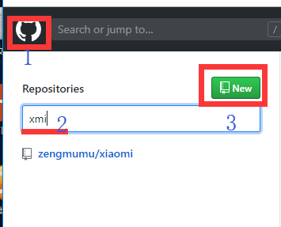
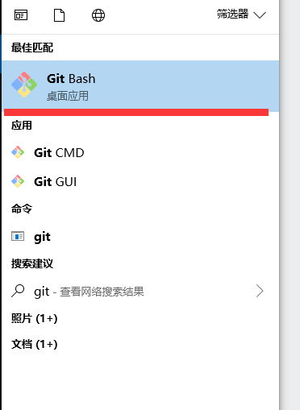
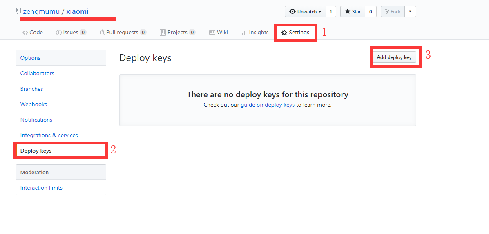
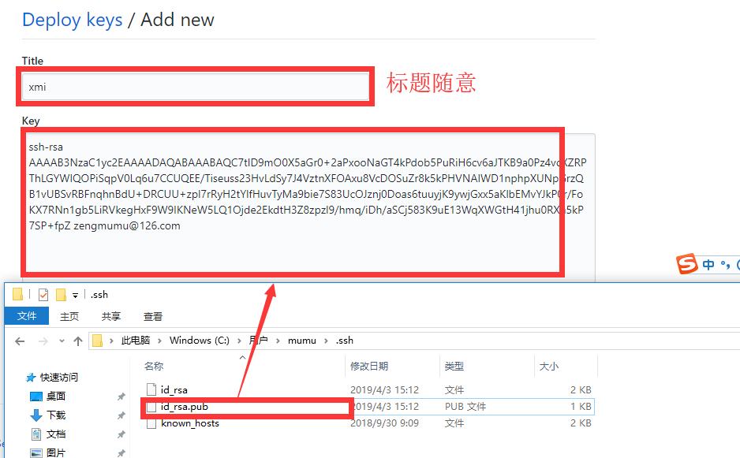
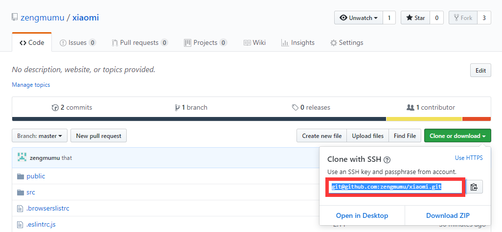

Git是目前世界上最先进的分布式版本控制系统
Linus虽然创建了Linux
Linus花了两周时间自己用C写了一个分布式版本控制系统，这就是Git！一个月之内，Linux系统的源码已经由Git管理了！
Git迅速成为最流行的分布式版本控制系统，尤其是2008年，GitHub网站上线了，它为开源项目免费提供Git存储，无数开源项目开始迁移至GitHub，包括jQuery，PHP，Ruby等等。
可以从Git官网直接下载 安装程序安装程序
git init
1. 注册github账号 并创建仓库
2. 制作钥匙
2.1 打开gitbash
2.2 输入命令 $ ssh-keygen -t rsa -C "youremail@example.com"
2.3 在用户目录里找到.ssh目录，打开 id_rsa.pub文件复制
2.4 加入到github里面


2.5 进入项目目录添加远程仓库
git remote add origin git@github.com:zengmumu/xiaomi.git

2.6 推送本地代码到远程
git push -u origin master
git add 文件名 //添加到暂存区 git commit -m "名称" //提交到版本分支 git log //查看信息 git reflog //查看相关历史信息
git checkout --文件名 // 测试工作区操作 git reset --hard 版本id // 回退版本
查看分支：git branch 创建分支：git branch切换分支：git checkout 创建+切换分支：git checkout -b 合并某分支到当前分支：git merge 删除分支：git branch -d
首先，master分支应该是非常稳定的，也就是仅用来发布新版本，平时不能在上面干活；
那在哪干活呢？干活都在dev分支上，也就是说，dev分支是不稳定的，到某个时候，比如1.0版本发布时，再把dev分支合并到master上，在master分支发布1.0版本；
你和你的小伙伴们每个人都在dev分支上干活，每个人都有自己的分支，时不时地往dev分支上合并就可以了。
所以，团队合作的分支看起来就像这样：